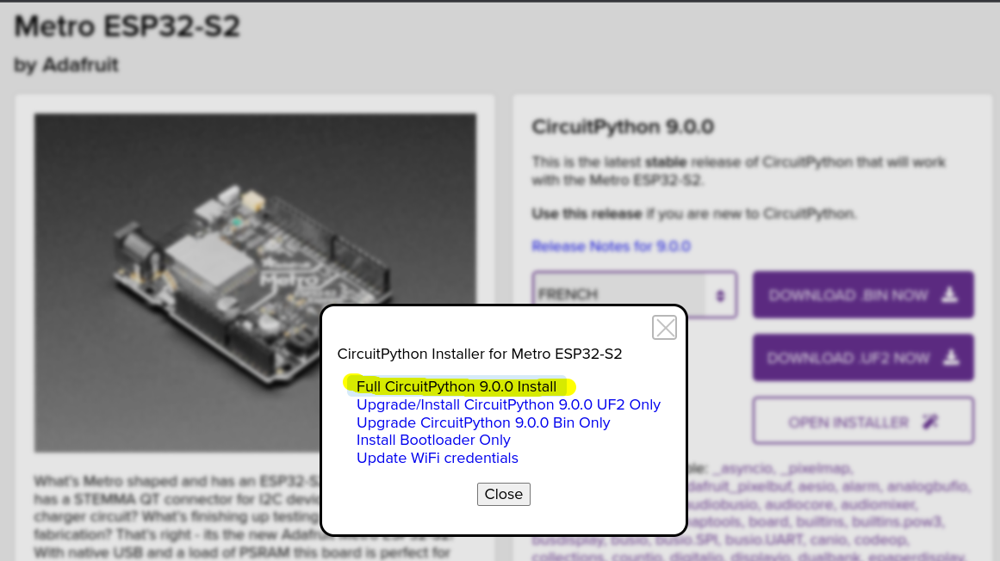

CircuitPython
What is CircuitPython?
CircuitPython is a programming language designed to simplify experimenting and learning to program on low-cost microcontroller boards. It makes getting started easier than ever with no upfront desktop downloads needed. Once you get your board set up, open any text editor, and get started editing code. It's that simple.
The full documentation is here.
Is CircuitPython installed on a Microcontroller Board?
- Plug a Microcontroller Board to a USB port of a PC
- If you get a USB drive named
CIRCUITPY, CircuitPython is already installed on the board - You can code the board by editing the file named
code.py
How to install CircuitPython on a Microcontroller?
In a nutshell, here the steps to follow:
- Open Google Chrome (not Firefox) on https://circuitpython.org/board/adafruit_metro_esp32s2/
- Connect your microcontroller board to an USB port of your PC
- Turn on the On/Off switch if needed so the LEDs will turn on.
- Make the the board enter the Drive Firmware Update (DFU) mode to update the ROM bootloader as explained in the Adafruit tutotrial. This means:
- Press and hold the DFU / Boot0 button down. Don't let go of it yet!
- Press and release the Reset button.
- Release the DFU / Boot0 button
- Click on the button
Open Installerand selectFull CircuitPython X.Y.Z Install - Follow the instructions until you have a USB drive named
CIRCUITthat automatically mount when pluging the microcontroller board to the PC in USB
How to code on your Microcontroller?
Just edit the file code.py file on the CIRCUITPY drive.
Code Editor
CircuitPython website recommands some code editors.
For example:
- Mu editor
- gedit on Ubuntu
Another possibility consists in using Google Chrome and a web-based editor.
CircuitPython Libraries
More sophisticated programs use external libraries (import statements in the Python code). Those external libraries should be copied into the lib folder in the CIRCUITPY drive.
https://circuitpython.org/libraries
Other Resources
- https://www.youtube.com/playlist?list=PL9VJ9OpT-IPSsQUWqQcNrVJqy4LhBjPX2
- Simulating CircuitPython code on a Raspberry Pi Pico board in your browser using Wokwi
- https://github.com/adafruit/awesome-circuitpython
FAQ
Mu editor installed using apt on Ubuntu 22.04 crashes
On Ubuntu 22.04 you can install mu editor using:
sudo apt install mu-editor
However, it throws an error at startup. An easy fix is described here:
Edit the file:
sudo gedit /usr/share/mu-editor/mu/interface/main.py
and modify lines 774-775:
- self.move((screen.width() - size.width()) / 2,
- (screen.height() - size.height()) / 2)
+ self.move((screen.width() - size.width()) // 2,
+ (screen.height() - size.height()) // 2)